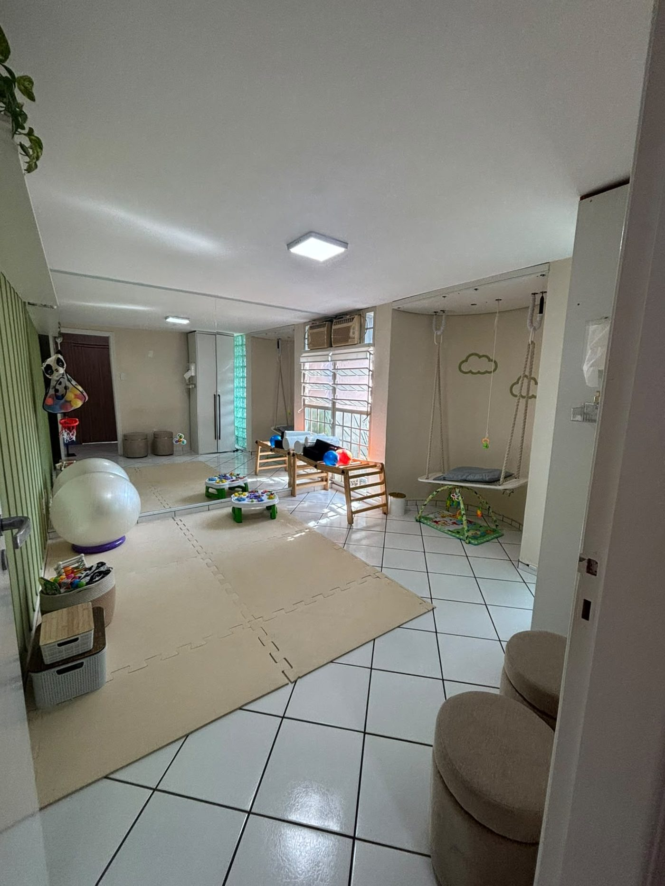
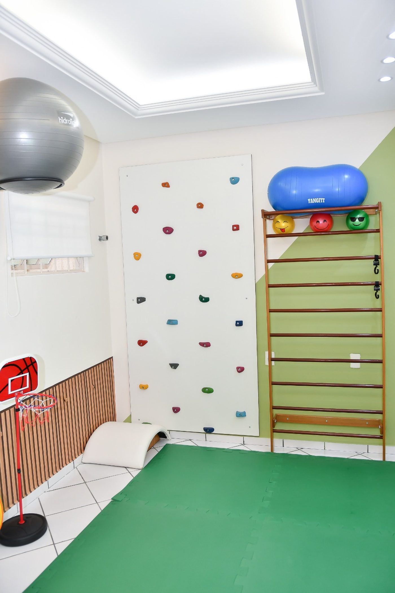
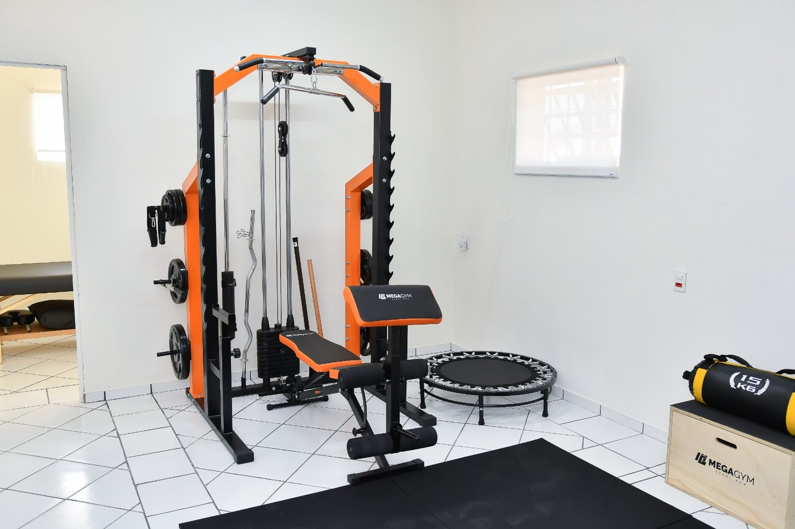
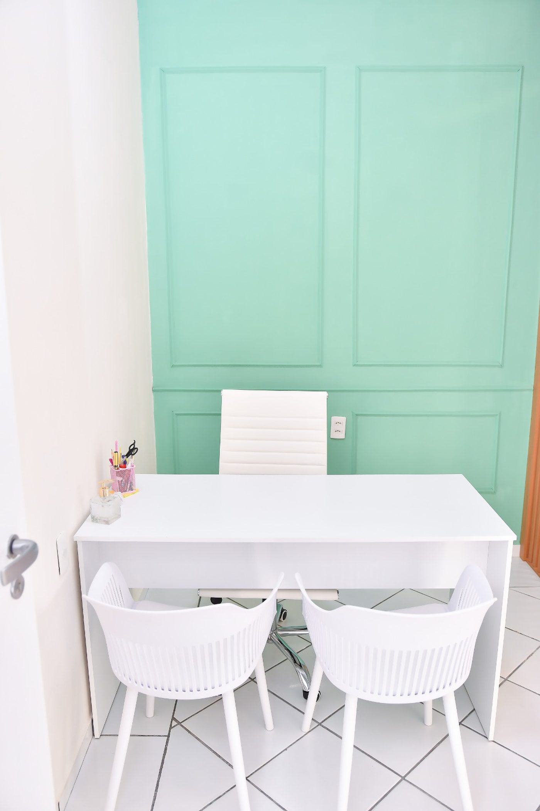
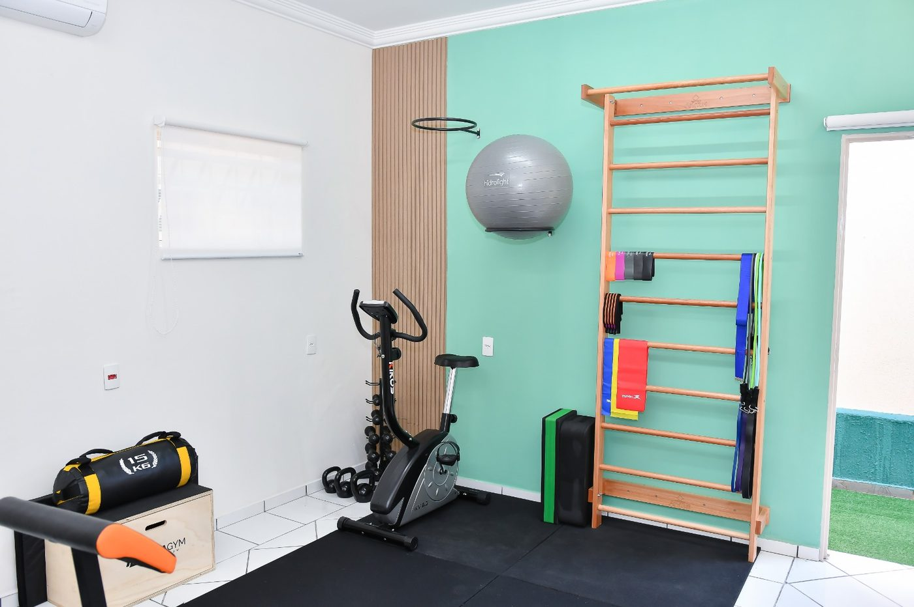
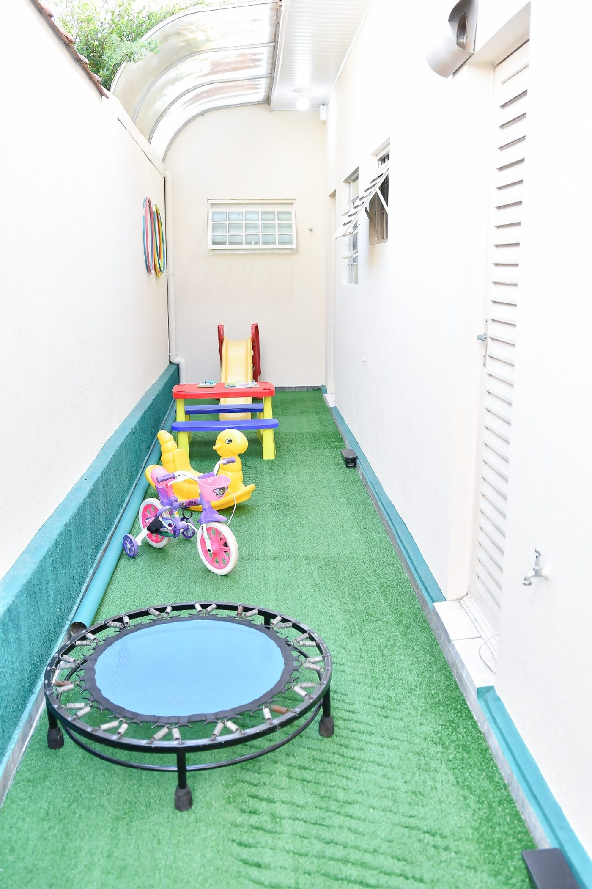

Em Laranjal Paulista, reunimos fisioterapia, psicologia, osteopatia e psicopedagogia em um cuidado interdisciplinar — pensado para acompanhar cada fase do desenvolvimento e da vida, do bebê ao idoso.
Nosso cuidado
01 / 04Cuidado desde os primeiros momentos.
Desenvolvimento acompanhado de perto.
Saúde, movimento e equilíbrio.
Mais autonomia e qualidade de vida.
Cuidado não é só tratar o sintoma é acompanhar cada fase da vida com escuta e presença.
Somos um Instituto interdisciplinar comprometido com o cuidado integral e humanizado de crianças, adultos e suas famílias. Acreditamos na força do acolhimento, do respeito à individualidade e na escuta sensível em todas as fases da vida.
Criar um ambiente seguro, afetuoso e profissional, onde cada pessoa se sinta vista, compreendida e acompanhada de forma única — com uma equipe integrada que alia conhecimento técnico, sensibilidade e empatia.

Ser um instituto de referência no cuidado interdisciplinar, reconhecido por promover o desenvolvimento integral e o bem-estar de cada indivíduo — um espaço acolhedor e transformador em todas as fases da vida.
Guiamos cada atendimento com afeto genuíno, transparência e busca constante por conhecimento — comprometidos com a jornada de cada paciente e sua família.
Um espaço pensado nos mínimos detalhes para acolher crianças, adultos e famílias.

Salas amplas e aconchegantes

Espaço lúdico infantil

Estrutura completa para reabilitação

Consultórios que acolhem

Ambiente adaptado a cada tratamento

Área externa para estimular e brincar
Cinco especialidades, um único time cuidando de cada caso em conjunto.
Fisioterapia neuropediátrica, atendimento para bebês e crianças e terapia manual pediátrica. Atuação em desenvolvimento infantil, assimetria craniana, torcicolo, crianças atípicas e fisioterapia respiratória.
Atendimento para idosos, atletas e pacientes em reabilitação, pós-operatório, ortopedia e neurologia adulto, com acompanhamento individualizado de acordo com cada necessidade.
Atua no desenvolvimento emocional, comportamental e social de crianças e adolescentes, típicos e atípicos, promovendo habilidades, autonomia, comunicação, autorregulação e qualidade de vida por meio de intervenções individualizadas — incluindo a abordagem ABA quando indicada.
Atendimento para adultos e crianças, utilizando técnicas manuais voltadas para disfunções musculoesqueléticas e viscerais. Pode auxiliar em queixas como refluxo, disquesia, constipação, cólicas e desconfortos corporais.
Avaliação e intervenção nas dificuldades de aprendizagem, estímulo de habilidades cognitivas, atenção, memória e funções executivas, além do acompanhamento de crianças e adolescentes durante o processo de aprendizagem.
Nossa unidade está localizada em uma região tranquila e de fácil acesso no coração de Laranjal Paulista.
R. Alfredo Barbieri, 92
Vila Conceição · Laranjal Paulista
Fale agora com a nossa equipe pelo WhatsApp e agende sua consulta ou tire dúvidas sobre convênios e especialidades.
Agendar consulta agora